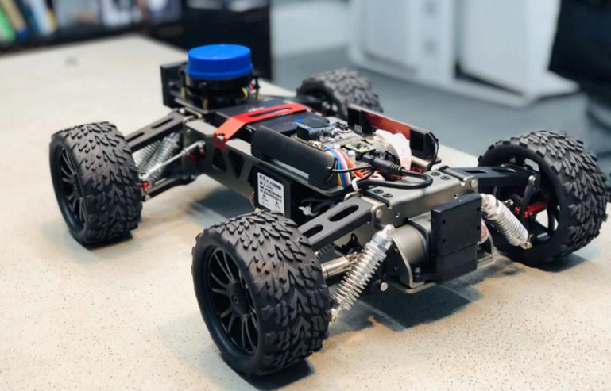
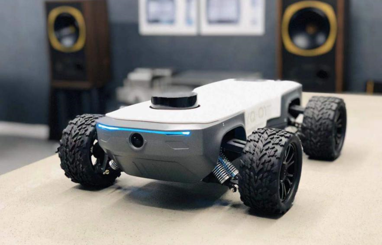
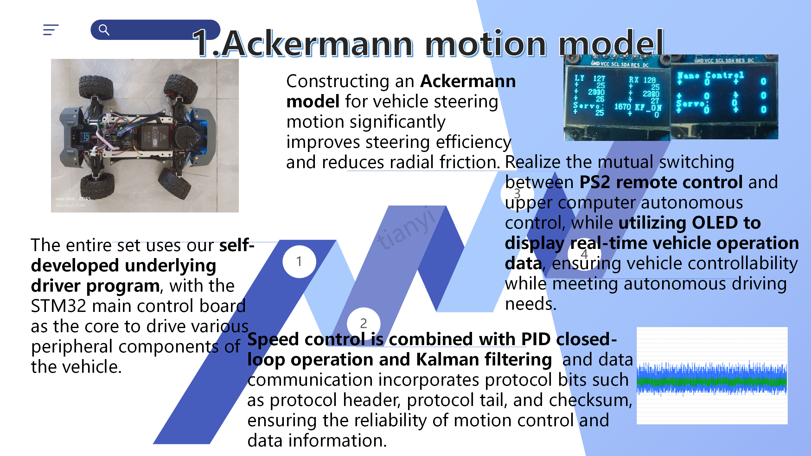
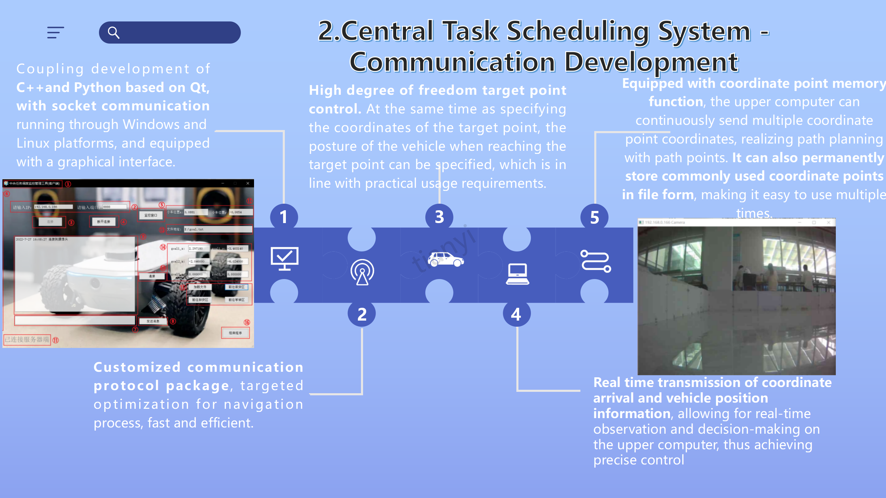
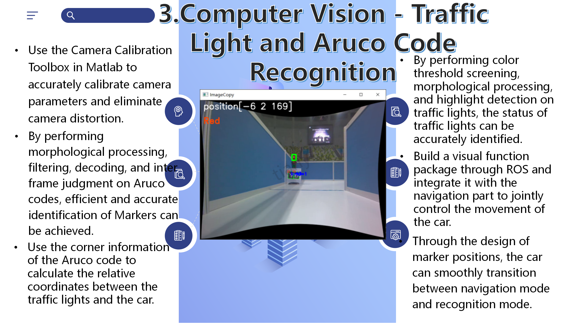
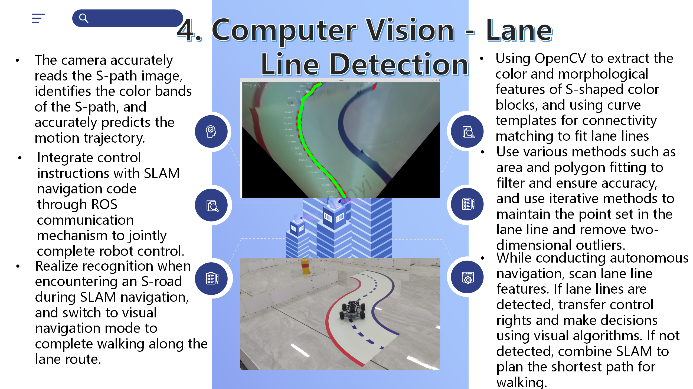
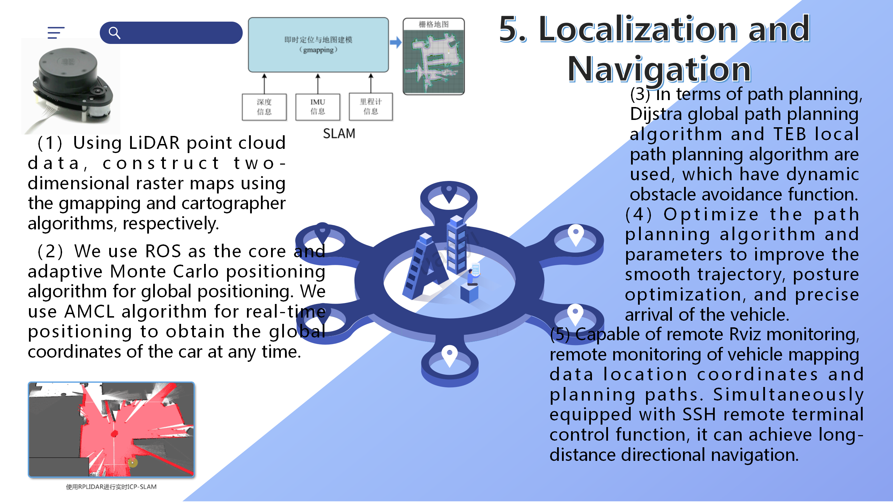
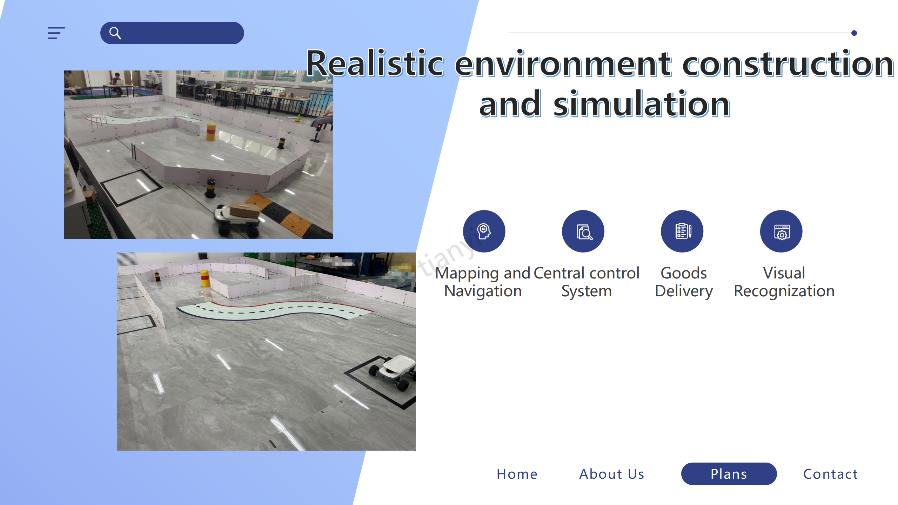
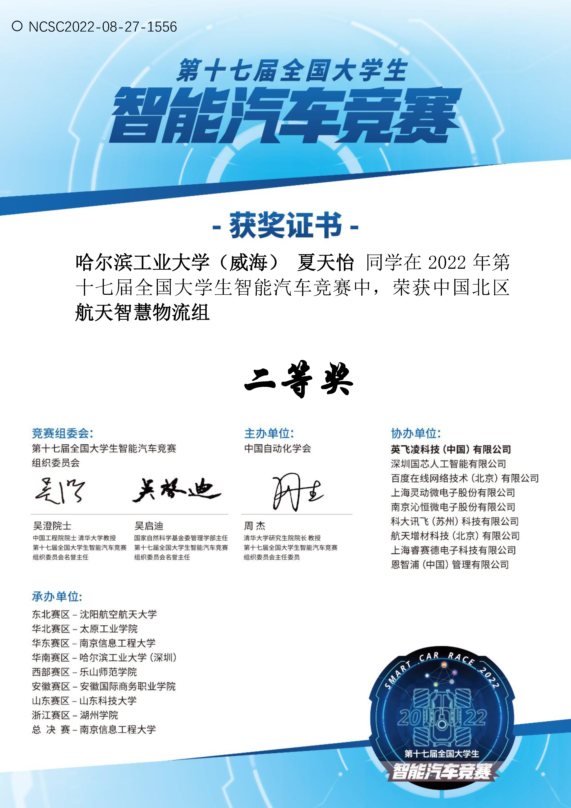
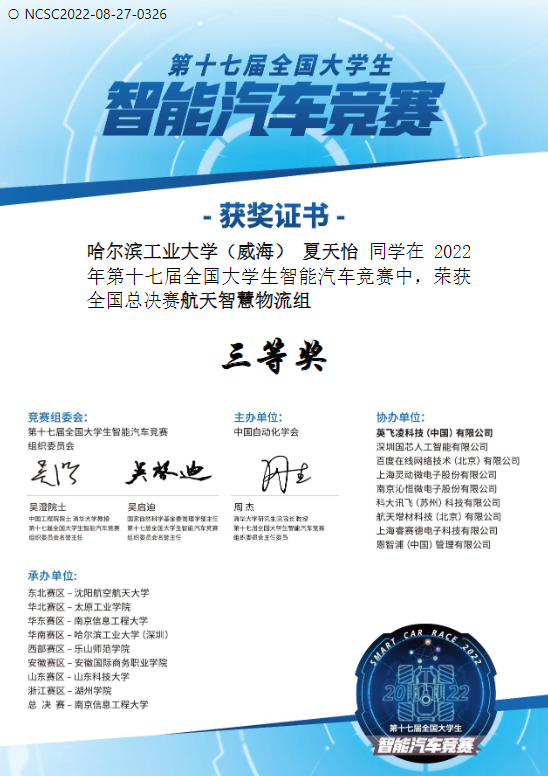

The Automated Guided Vehicle Based on Jetson Nano for Delivery
Tianyi Xia
Our team built an autonomous delivery vehicle for the Aerospace Intelligent Logistics track of the 17th National University Students Intelligent Car Race (2022). We ranked 30th among hundreds of teams in the online qualifier, which earned us the competition vehicle (worth about $3,000) and a spot in the regional round. We then won Second Prize in the North China regional round and advanced to the national finals, where we won Third Prize. The project was also showcased as an outstanding work in university innovation competitions. During this project, I:
  The final technical reports for the regional and national rounds are not public. Please contact me if you are interested in more details. Key TechnologiesAckermann Motion Model Central Task Scheduling System: Communication Computer Vision: Traffic Light and ArUco Code Recognition Computer Vision: Lane Detection Localization and Navigation Real-World Demonstration Online QualifierThe online qualifier consisted of five tasks. The reports are in Chinese. Task 1: Ackermann Steering ControlDifferential drive control under the Ackermann steering model on an STM32, commanded over serial and Bluetooth. Task 2: Client–Server CommunicationA Qt client on Windows that exchanges messages, camera images, and commands with a ROS server on the vehicle. Task 3: Lane DetectionLane-line detection in OpenCV with a perspective transform, HSV thresholding, and contour filtering. Task 4: Path PlanningA* with optimizations such as bidirectional search, Theta*, and simulated annealing, extended with sampling-based planners including RRT, RRT*, and informed RRT*. Task 5: LiDAR SLAMMapping with gmapping, Hector, Karto, and Cartographer, a comparison of their results, and parameter tuning of Cartographer. Awards North China Regional Second Prize  National Third Prize |